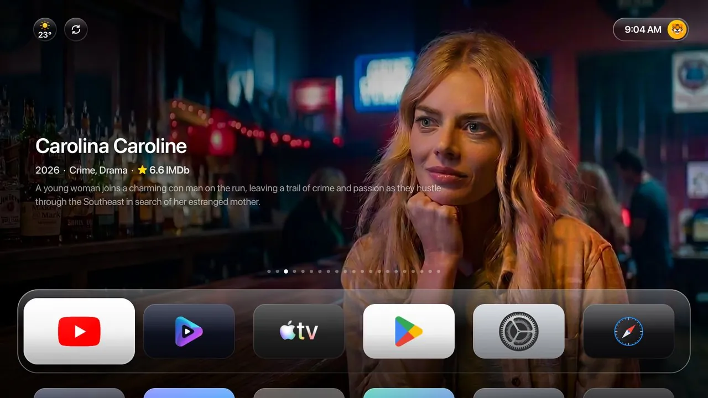
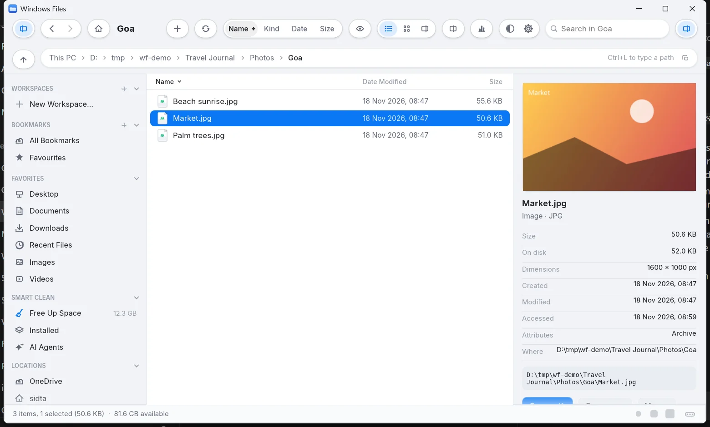
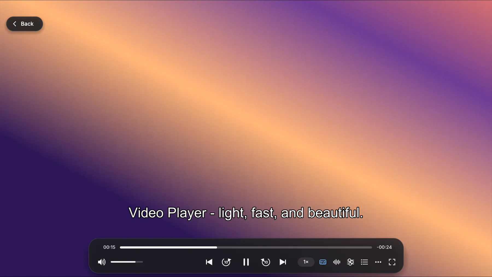
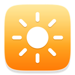

Meet your new favourite apps.
Eight free apps for Windows, macOS, Linux and Android TV, built to be fast, clean and private. Plus the gadgets I recommend.
Free · Windows, macOS, Linux and Android TV · No account needed



A tvOS-style home screen for Android TV. Made for the remote and the big screen.
Learn more about tvOS Launcher →
The Mac dock, on Windows 11. Icons grow as you move across them.
Learn more about MacDock →
Browse your photos by year, month or day. Edit without touching the originals.
Learn more about Gallery →
Step into archives like folders and search inside them. ZIP, 7Z, RAR and more.
Learn more about RustZip →
A Finder-style file manager for Windows. Quick Look, columns and split panes.
Learn more about Windows Files →
A light, fast media player for Windows. Floating controls and 15 themes.
Learn more about Video Player →
Mac-style touchpad gestures for Windows. Three finger drag and custom swipes.
Learn more about 3 Finger Drag →

One tray control for every display. Laptop screens and external monitors.
Learn more about Brightness →Pick an IPA and it lands on your iPhone. Sideload from Windows with a free Apple ID.
Learn more about SideHatch →
Clean up your TV from the couch. Storage cleaner and APK extractor, built for the D-pad.
Learn more about File Manager TV →Questions, answered
Where do I download the apps?
Open an app from the Apps page. Its own page has the Download button and the install steps.
Does MacDock need admin rights?
No. It installs for your user and needs no SDK.
Does Gallery upload my photos?
No. It runs locally and never modifies your originals. Edits are saved as copies.
How do I install the TV apps?
Copy the APK to your TV with a USB drive or a sideload app, or use adb. The steps are on each app's page.
Join the community.
Watch, follow and join the community for updates and help.